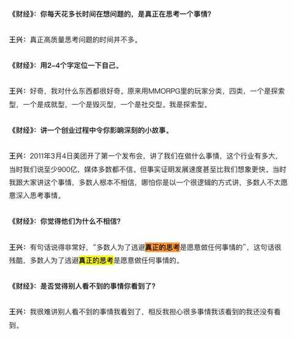
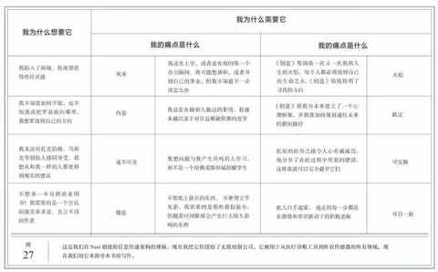
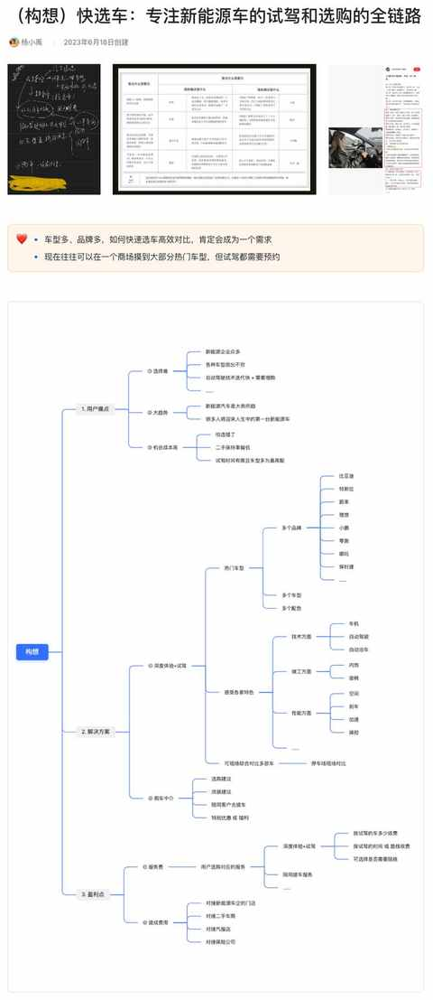

六月，对今后想做的事情有了一点新思考
之前有提到过，思考是很容易在日常中被一再忽略的但极其重要的事情。
2016 年王兴在接受财经杂志专访的时候也有一个很出圈的关于思考的表述：多数人为了逃避真正的思考，愿意做任何事情。

关于什么是真正的思考，什么又是深度思考，每个人的定义都不同，先把思考这个词定义的简单的一些，就从字面的意思出发。
再简单点去释义思考，也可以称为想事情，从 5 月下旬尝试输出到现在，经历了一个逐步打开自己的过程，期间也不断的和朋友沟通，去线下参加播客大会。
可能是综合这些因素，在六月份基于当下的个人状态，对于今后想做的事情，有了一点新的思考。
借鉴以始为终的思路，先确定和想达到的理想状态，再根据想达到的状态去设置 一个大目标 ，再逐步拆解去确定做的事情的范围和类型。
还有一个特别重要的原则：
拒绝既要又要！规避掉入到不可能三角的陷阱中不断内耗！
基于这些，对思考的内容做了梳理，接下来也会逐步去细化，让思考的内容能走到落地实操的环节。
一、理想状态：小富即安
1️⃣ 本着拒绝既要又要的原则，坚决执行小富即安的策略
2️⃣ 不同阶段设置不同的年收入目标
3️⃣ 力求工作时间可控
不超过每日 5 小时， 20-30 个小时/周 。
因为必须优先预留出来运动的时间，做家务的时间，接送娃的时候等等，工作仅仅是生活的一个组成部分，优先级不应该是最高的。
二、业务特点：小而精
1️⃣ 是细分领域
也是认真的做了排除法，很多看起来赚钱的业务根本做不了，要么是投入太大，要么是风险很大，要么是需要人脉及各种资源。
例如去年6 月份的时候因为去试驾了几款新能源车，且在看《创造》这本书
按照书中的公式对关于选车的业务进行梳理：

当时还把这个内容发给正在购车的朋友们去看：

沟通下来发现，是真需求但看测评和自己去试驾完全可以替代，费点时间而已但不需要额外的花费，另一方面就是投入巨大而且不可控因素很多，适合本来就是做二手车的人去试试。
2️⃣ 不低的准入门槛
门槛过低的事情就没有稳定的护城河，其他人想做就能做，只会导致越来越不赚钱，直到难以为继。
3️⃣ 低烈度的竞争
相对低烈度的竞争和准入门槛息息相关，等于是多重筛选之后，一定时期里面的竞争状态较为稳定。
三、业务类型： 小而美
1️⃣ 小团队
如果一个人能搞定所有环节就最好，但这种情况估计过于理想，相对而言能力均衡且互补的小团队更能小步快跑，灵活应变，效率超高。
2️⃣ 小项目
都是小团队了，必然就不适合做大项目，小项目的周期段见效快，也更适合前期试错，即使发现方向错了也能快速调转方向。
3️⃣ 不低的单价
费用低则没有性价比，换算成时薪可能做与不做都行，这种情况是必须极力避免，单价可以不高，但不能低。
四、业务构想：
暂时有两个，还在继续调研
两个业务构想都是针对特定的人群提供具体的服务，主要是因为不上班两年多来主要接触的就是这两个类型的人群，在日常的沟通中逐步了解到他们的需求。
业务构想1️⃣：服务自媒体博主
自媒体博主绕不开的就是商业化 ，相比做内容，如何商业化对于自媒体博主来说是一道必须解开的难题。
在当下，也只有商业化做的好的博主，内容才能同步越做越好，从而让自媒体事业维持更长时间。
业务构想2️⃣：服务自由职业者
自由职业者比较缺稳定的单子，这样可以逐步摆脱忙的时候特别忙，闲的时候一点活都没有的情况，让时间安排能更合理。
另外就是每个甲方的付款周期不一的问题，尾款之类的支付不及时，遇到大点的项目又很难快速找到合适的合作伙伴等。
以上，就是六月份对今后想做的事情的一点新思考，希望这次能让思考的状态保持的更久，同时也让思考更深入。